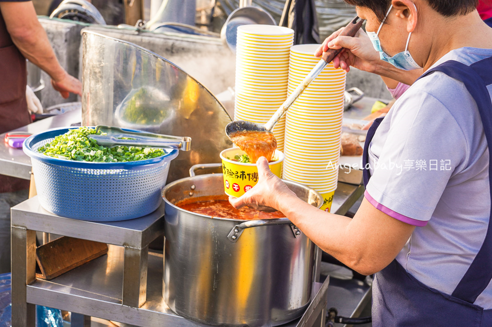
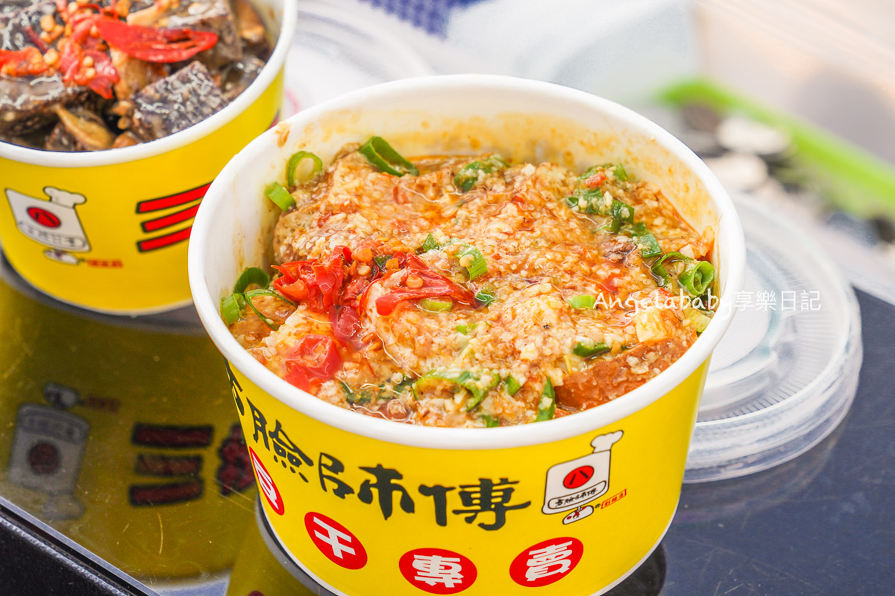
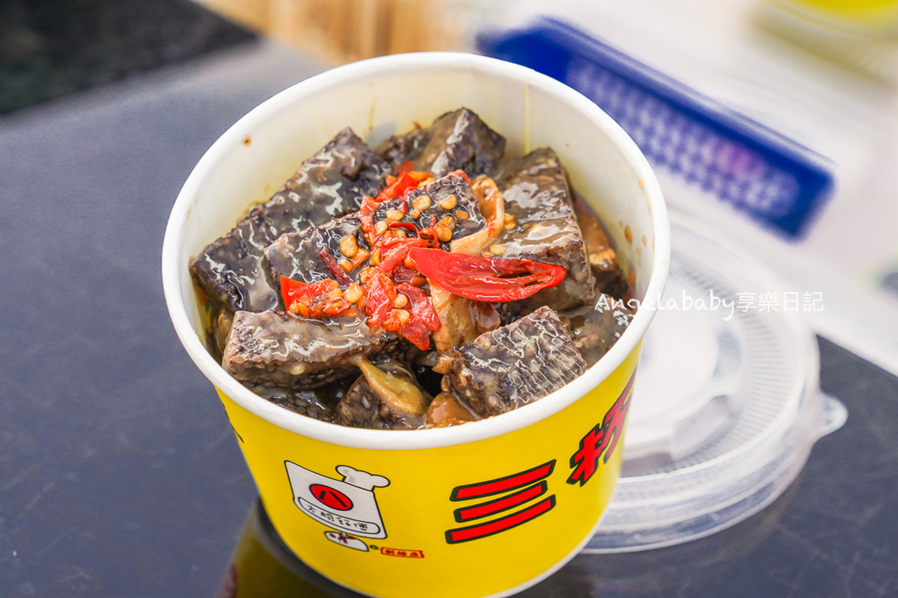
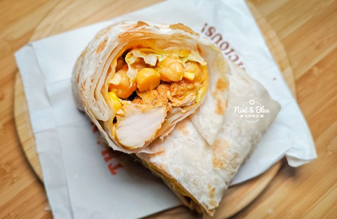
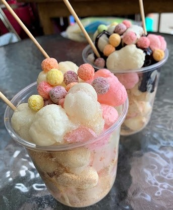

中部夜市著名美食指南
苗栗縣
英才觀光夜市
後龍夜市
公館夜市
國泰夜市
臺中市
逢甲國際觀光夜市
一中街夜市
旱溪觀光夜市
忠孝路觀光夜市
彰化縣
精誠夜市
龍燈夜市
北斗夜市
南投縣
集集夜市
埔里城觀光夜市
埔里魚市場觀光夜市
草鞋墩人文觀光夜市
雲林縣
斗六觀光夜市
參考資料
資訊
『旱溪夜市』就在東區旱溪東路一段與東英一街，在地屹立不搖10多年，由於佔地約6000坪，超過2.3百攤的攤位，不僅有傳統的小吃，也經常有創新的攤位加入，再加上各式各樣生活百貨、服飾、大人小孩都愛玩得彈珠台、麻將台、射擊遊戲等，讓每週二、四、五、六晚上的旱溪變得超級熱鬧，在台中基本就是個無人不知無人不曉的夜市。
營業時間
周二、周四、周五、周六：17:00~1:00
地址
401台中市東區旱溪東路一段
著名
美食介紹
方臉師傅蒜香豆干



蒜香味十足的醬汁配上辣椒～底下滿滿的大塊四方豆方，
充滿氣孔的大豆乾沾上醬汁還真是刷嘴，一大碗吃起來超爽快，
三杯米血現場爆炒麻油薑片，香氣四溢，拌入米血收乾醬汁～冷掉米血更Q更好吃。
印度阿三甩餅

雖然在不少地方都可以看到印度阿三甩餅的身影，不過旱溪夜市內的這間印度阿三可是熱門的排隊小攤，常常可以看到攤前長長的排隊人龍。這兒的甩餅現點現甩，再放至鐵鍋上乾烙，口感Q彈亦不顯油膩，口味則是有甜有鹹，從巧克力、奶油、花生，一直到雞肉、鮪魚、咖哩等等通通有，除了單點口味，還可以選擇綜合，一次就能吃到雞肉、鮪魚、咖哩、起司等豐富餡料，他們的咖哩醬汁味道出色，而且也不辣，愛吃咖哩或者怕辣的朋友，都可以試試。
福元炸湯圓

這家的口味分成兩種，牛奶花生炸湯圓 （煉乳+花生粉）；金莎巧克力炸湯圓 60（巧克力醬+花生粉），他們家的炸湯圓炸得非常酥脆、爆的淋漓盡致，還可以在一旁觀看製作過程實在非常療癒！而且老闆下料非常大方！花生粉給的非常多，可以看要選擇煉乳或是巧克力，也可以2個都加層次跟豐富。
靜宜大學 資料科學暨大數據分析與應學系 陳慶耀 王瑞鴻 葉毅華 吳其翰 蔡沅峻 羅國泰 製作2023